CITA · Computation in Architecture · Semester 2
Python for Architectural Computation
Eight exercises connecting programming, data and geometry to architectural questions.
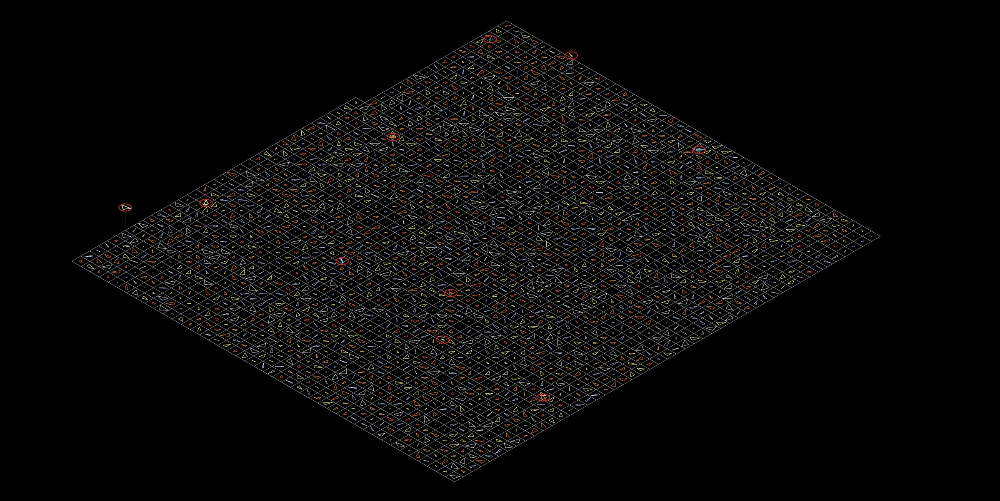
This coursework portfolio traces my progression from Python fundamentals to computational methods for design. Rather than presenting code as an isolated skill, each exercise applies it to a spatial problem: generating fields, classifying values, reading environmental datasets, measuring images, constructing point clouds, producing geometry datasets and analysing design or transport networks.
The work moves between standalone Python and visual programming. pandas and GeoPandas structure environmental information; OpenCV and Open3D translate images into measurable spatial data; GhPython connects scripted geometry directly to Rhino and Grasshopper; and scikit-learn, MiniSom and NetworkX support machine-learning and graph-based analysis.
Technical overview
One language, six computational workflows.
Python is the common layer, but the stack changes with the type of architectural information being handled. The exercises progress from language fundamentals to specialist libraries for data, vision, geometry, machine learning and networks.
- Programming foundations
- Python standard libraryVariables, nested loops, conditionals, lists, modular arithmetic, random values and time-based iteration.
- Environmental data
- pandas · GeoPandas · MatplotlibData cleaning, text normalisation, grouping, correlation, tabular-to-spatial joins and thematic mapping.
- Computer vision
- OpenCV · NumPyCheckerboard calibration, lens correction, pose estimation, thresholding, contours and image-based measurement.
- Spatial image data
- Open3D · OpenCV · NumPyPixel-to-point conversion, HSV colour filtering, 3D visualisation and bounding-box extraction.
- Geometry + machine learning
- GhPython · Grasshopper · scikit-learn · MiniSomProcedural geometry, feature extraction, standard scaling, KMeans, medoids and self-organising maps.
- Network analysis
- NetworkX · MatplotlibGraph construction, shortest paths, connectivity and degree, closeness and betweenness centrality.
01 · Generative fields
ASCII characters become a changing environmental field.
Nested loops evaluate every row and column of a text grid. At each position, the script combines a vertical gradient, a time-dependent sine wave and random noise into one scalar value, then maps that value to progressively denser characters. Recalculating the field over successive time steps creates a terminal animation that behaves like fluctuating radiation data.
Python · math · random · nested loops · scalar normalisation · time-step iteration
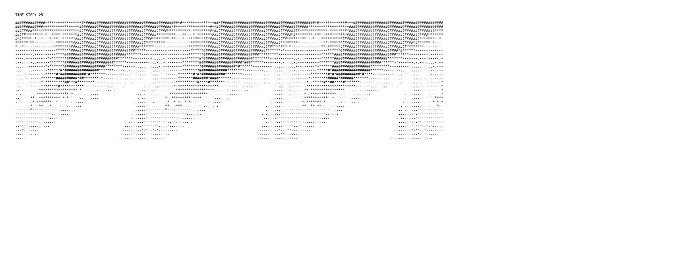
02 · Conditionals, loops and lists
Learning to control decisions, repetition and classification.
Three short scripts establish the control logic used throughout the later work. A random starting value selects an upward or downward counting loop; the modulo operator sorts integers into mutually exclusive lists; and indexed values are filtered by a threshold to calculate a probability ratio. The order of the if/elif rules matters because each value is assigned to its first valid category.
Python · random · if/elif/else · for loops · lists · modulo-based classification
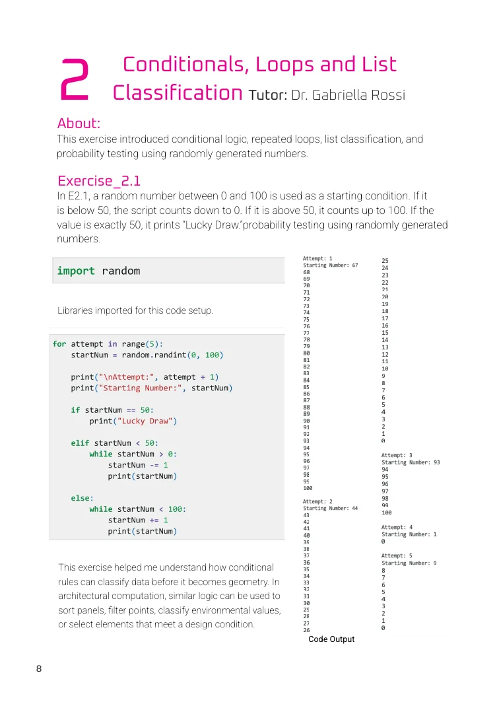
03 · EPD data with GeoPandas
From a concrete spreadsheet to an environmental map.
Ready-mix concrete Environmental Product Declaration records are loaded into a pandas DataFrame, then cleaned by standardising column names and normalising text. Grouping and aggregation compare companies, concrete mixes and environmental indicators. Company counts by state are then joined to geographic boundary data in a GeoDataFrame, producing a map that connects material impact data to regional supply patterns.
pandas · GeoPandas · Matplotlib · DataFrames · grouping and aggregation · correlation matrix · spatial join
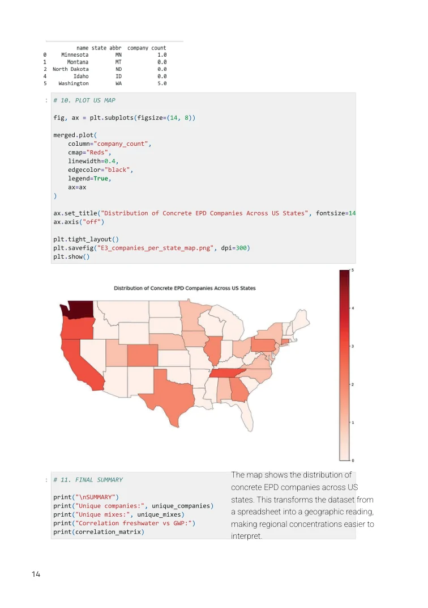
04 · Image processing and pose estimation
Calibrating a camera before using images as measurements.
OpenCV detects corresponding checkerboard corners across multiple photographs and uses their known spacing to solve the camera matrix and lens-distortion coefficients. The calibrated image supports pose estimation and 3D-axis projection. A second pipeline converts images to masks, extracts contours and bounding rectangles, and applies a millimetre-per-pixel scale to estimate object dimensions.
OpenCV · NumPy · camera calibration · distortion correction · pose estimation · thresholding · contour measurement
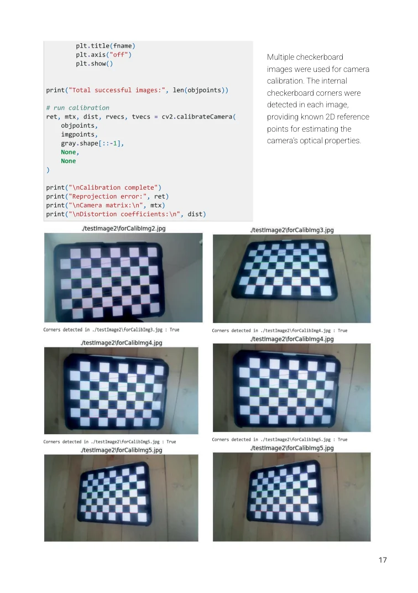
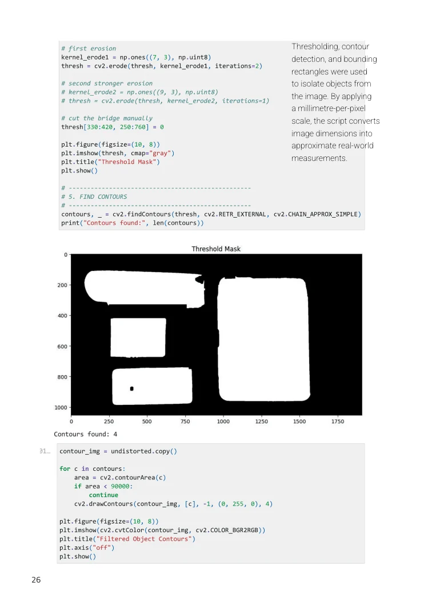
05 · Point clouds
Reconstructing an image as spatial, colour-filtered data.
NumPy converts the image grid into point coordinates while retaining each pixel’s colour. OpenCV changes the colour representation from RGB to HSV so selected hue ranges can be isolated more reliably. Open3D then displays the filtered samples as spatial point clouds and calculates a bounding box around the extracted geometry.
NumPy · OpenCV · Open3D · pixel-to-point conversion · HSV masks · point-cloud visualisation · bounding boxes
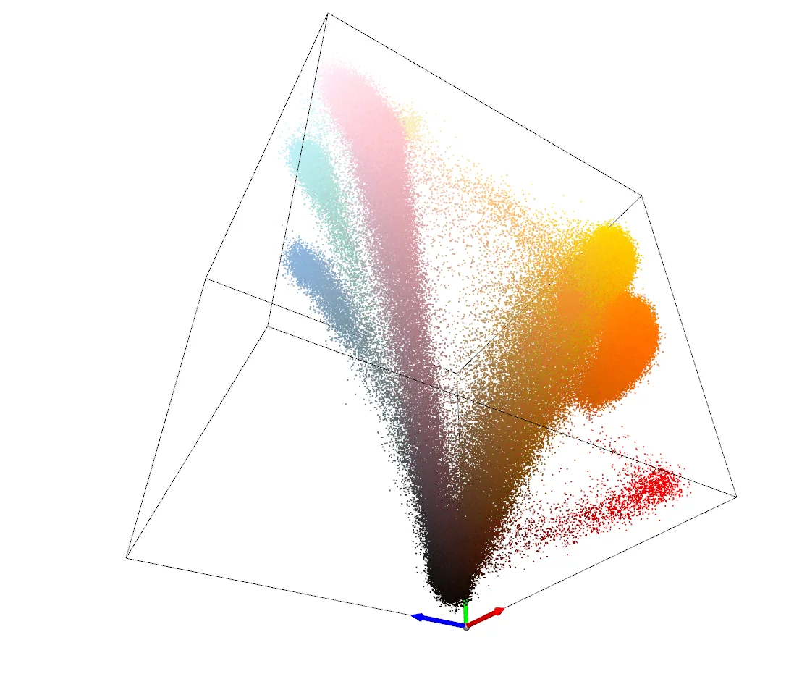
06 · Dataset creation with GhPython
Generating geometry and its metadata together.
Python runs inside Grasshopper through GhPython, using Rhino geometry as both input and output. The definition produces many triangle variations and extracts a consistent feature vector for each sample: angles, edge lengths, hypotenuse, perimeter, area and point coordinates. Geometry and metadata therefore remain linked, creating a structured dataset for the following machine-learning exercise.
GhPython · Grasshopper · Rhino geometry · procedural sampling · feature extraction · structured geometric datasets
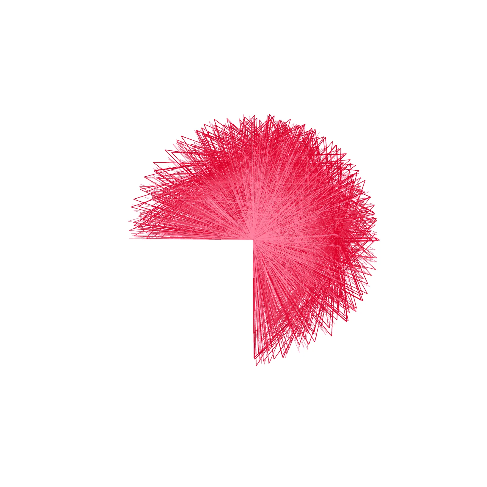
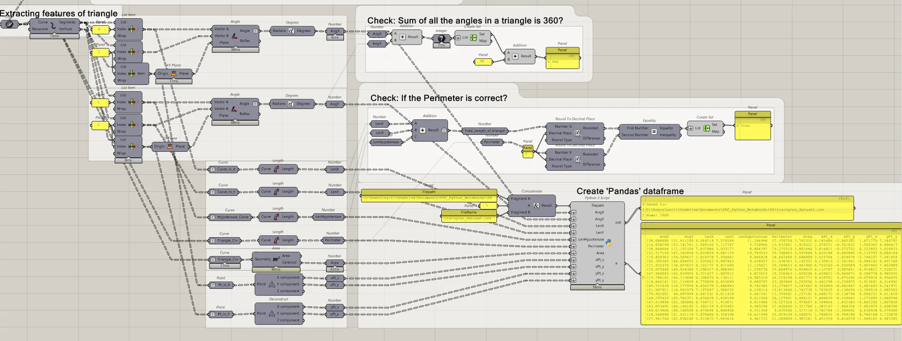
07 · KMeans and self-organising maps
Machine learning reveals families and gaps in the design space.
A correlation matrix first exposes strongly related features. StandardScaler then gives differently sized parameters equal influence before scikit-learn’s KMeans divides the triangles into ten families. For each cluster, pairwise distances identify the medoid—the real sample closest to the cluster centre.
MiniSom learns a second, continuous 10 × 10 representation. The unscaled SOM collapses around large numerical ranges; the scaled version distributes forms more evenly. After inverse-transforming the map vectors, a tolerance-based distance check shows that none of the 100 SOM triangles exactly duplicates an original sample, demonstrating interpolation across the design space.
pandas · scikit-learn · StandardScaler · KMeans · pairwise distances · medoids · MiniSom · inverse transformation
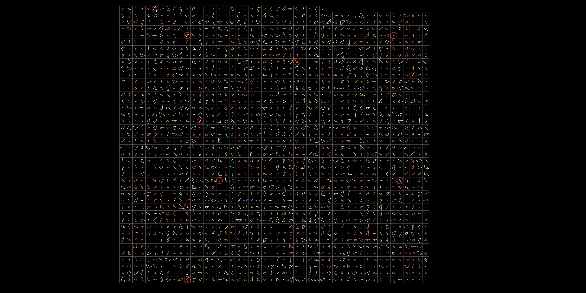
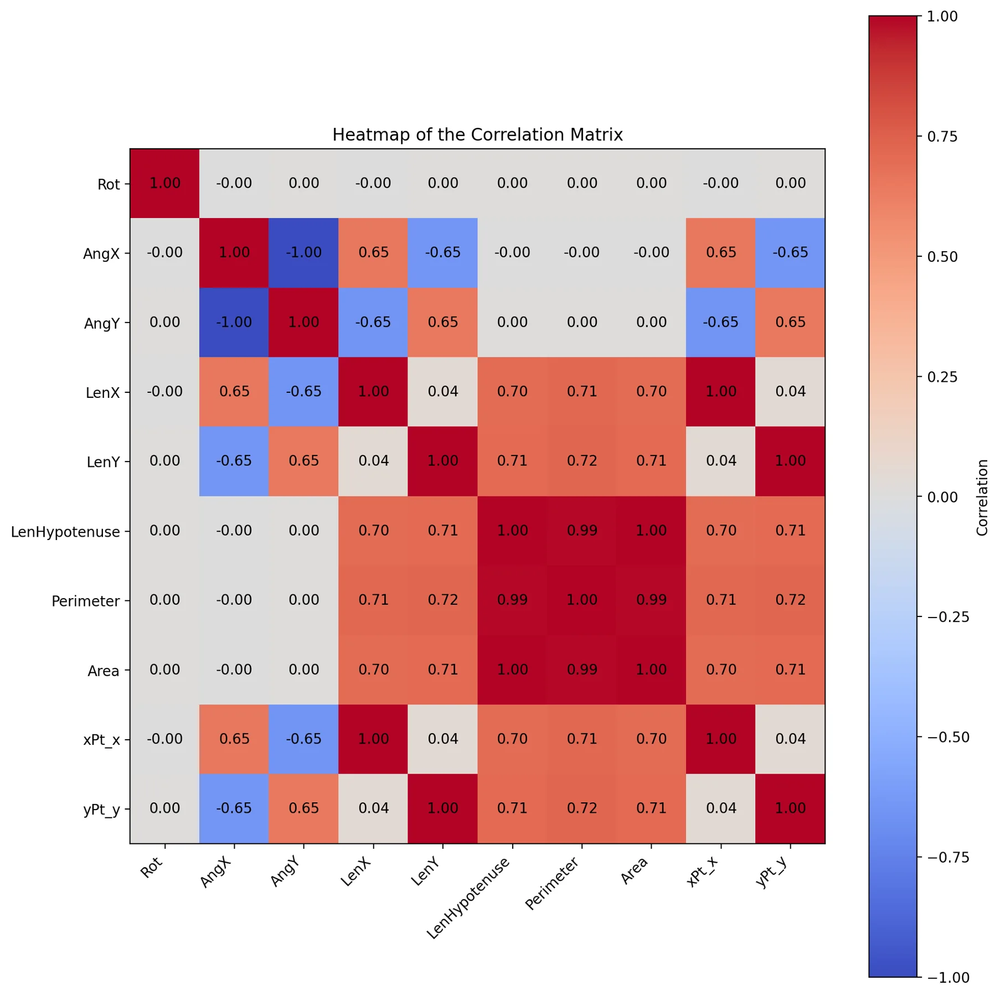
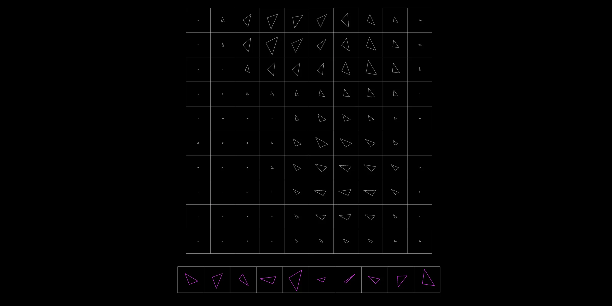
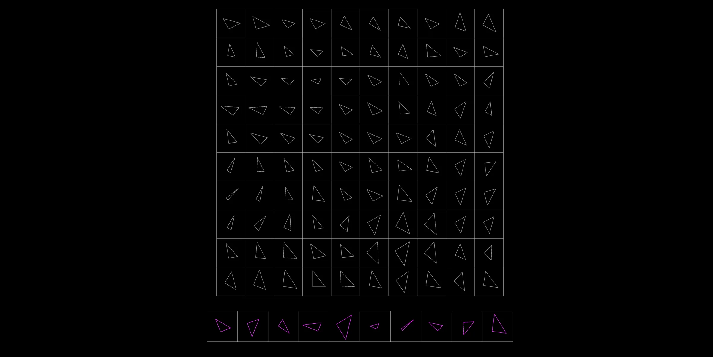
08 · Copenhagen metro with NetworkX
Reading an urban transport system as a graph.
NetworkX translates stations into nodes and direct rail connections into edges, allowing the existing metro and a proposed 2035 network including M5 to be compared with the same graph model. Shortest paths evaluate travel relationships, while degree, closeness and betweenness centrality reveal different kinds of importance within the system. The exercise uses simulated footfall weights—not observed passenger counts—so it demonstrates an analytical method rather than making a ridership claim.
NetworkX · Matplotlib · graph modelling · shortest paths · connectivity · degree, closeness and betweenness centrality
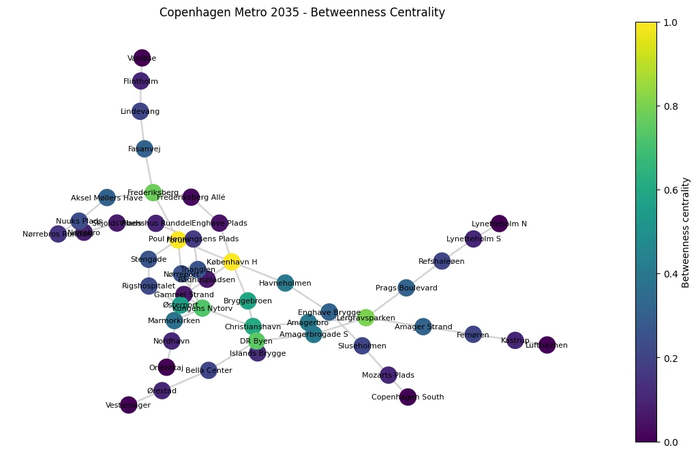
Credits
These eight exercises were completed by Naitik Sharma in Semester 2 of CITAstudio: Computation in Architecture under Dr Gabriella Rossi.
All code excerpts, diagrams, datasets and visual outputs shown here are drawn from the submitted coursework portfolio.